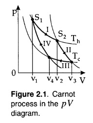
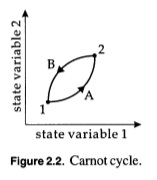
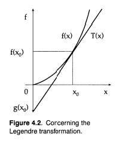

| Thermodynamic temperature$^a$ Kelvin temperature scale |
$T∝\lim↙{p→0}(pV)$ $T\text"/"K=273.16{\lim↙{p→0}(pV)_T}/{\lim↙{p→0}(pV)_{tr}}$ |
| First law$^b$ | $dU=δQ+δW$ |
| Entropy$^c$ | $dS={δQ_{rev}}/{T}≥{δQ}/{T}$ |
| $T$ | thermodynamics temperature | $V$ | volume of a fixed mass of gas |
| $p$ | gas pressure | $K$ | kelvin unit |
| $tr$ | temperature of the triple point of water | $dU$ | change in internal energy |
| $δW$ | work done on system | $δQ$ | heat supplied to system |
| $S$ | experimental entropy | $T$ | temperature |
| $\text"rev"$ | reversible change |
| Hydrostatic pressure | $δW=-pdV$ |
| Surface tension | $δW=γdA$ |
| Electric field | $δW=(\bo E,d\bo p)$ |
| Magnetic field | $δW=(\bo B,d\bo m)$ |
| Electric current | $δW=∆ϕdq$ |
| $p$ | (hydrostatic) pressure | $dV$ | volume change |
| $δW$ | work done on the system | $γ$ | surface tension |
| $dA$ | change in area | $\bo E$ | electric field |
| $d\bo p$ | induced electric dipole moment | $\bo B$ | magnetic flux density |
| $d\bo m$ | induced magnetic dipole moment | $∆ϕ$ | potential difference |
| $dq$ | charge moved |
| Constant volume | $C_V={δQ}/{dT}|_V={∂U}/{∂T}|_V=T{∂S}/{∂T}_|_V$ |
| Constant pressure | $C_p={δQ}/{dT}|_p={∂H}/{∂T}|_p=T{∂S}/{∂T}|_p$ |
| Difference in heat capacities | $C_p-C_V=\({∂U}/{∂V}|_T+p\){∂V}/{∂T}|_p$
$={VTβ_p^2}/{k_T}$ |
| Ratio of heat capacities | $γ={C_p}/{C_V}={k_T}/{k_S}$ |
| $C_V$ | heat capacity, $V$ constant | $Q$ | heat |
| $T$ | temperature | $V$ | volume |
| $U$ | internal energy | $S$ | entropy |
| $C_p$ | heat capacity, $p$ constant | $p$ | pressure |
| $dH$ | enthalpy | ||
| $β_p$ | isobaric expansivity | $k_T$ | isothermal compressibility |
| $γ$ | ratio of heat capacities | $k_S$ | adiabatic compressibility |
| Isobaric expansivity$^a$ | $β_p=1/V{∂V}/{∂T}|_p$ |
| Isothermal compressibility | $k_T=-1/V{∂V}/{∂p}|_T$ |
| Adiabatic compressibility | $k_S=-1/V{∂V}/{∂p}|_S$ |
| Isothermal bulk modulus | $K_T={1}/{k_T}=-V{∂p}/{∂V}|_T$ |
| Adiabatic bulk modulus | $K_S={1}/{k_S}=-V{∂p}/{∂V}|_S$ |
| $β_p$ | isobaric expansivity | $V$ | volume |
| $T$ | temperature | $k_T$ | isothermal compressibility |
| $p$ | pressure | $k_S$ | adiabatic compressibility |
| $K_T$ | isothermal bulk modulus | $K_S$ | adiabatic bulk modulus |
| Internal energy | $dU=TdS-pdV+μdN$ |
| Enthalpy | $H=U+pV$ $dH=TdS+Vdp+μdN$ |
| Helmholtz free energy$^b$ | $F=U-TS$ $dF=-SdT-pdV+μdN$ |
| Gibbs free energy$^c$ | $G=U-TS+pV$ $=F+pV=H-TS$ $dG=-SdT+Vdp+μdN$ |
| Grand potential | $Φ=F-μN$ $dΦ=-SdT-pdV-Ndμ$ |
| Gibbs-Duhem relation | $-SdT+Vdp-Ndμ=0$ |
| Availability | $A=U-T_0S+p_0V$ $dA=(T-T_0)dS-(p-p_0)dV$ |
| $U$ | internal energy | $T$ | temperature |
| $S$ | entropy | $μ$ | chemical potential |
| $N$ | number of particles | $H$ | enthalpy |
| $p$ | pressure | $V$ | volume |
| $F$ | Helmholtz free energy | $G$ | Gibbs free energy |
| $Φ$ | grand potential | $A$ | availability |
| $T_0$ | temperature of surroundings | $p_0$ | pressure of surrounding |
| Maxwell 1 | ${∂T}/{∂V}|_S=-{∂p}/{∂S}|_V (={∂^2 U}/{∂S∂V})$ |
| Maxwell 2 | ${∂T}/{∂p}|_S={∂V}/{∂S}|_p (={∂^2 H}/{∂p∂S})$ |
| Maxwell 3 | ${∂p}/{∂T}|_V={∂S}/{∂V}|_T (={∂^2 F}/{∂T∂V})$ |
| Maxwell 4 | ${∂V}/{∂T}|_p=-{∂S}/{∂p}|_T (={∂^2 G}/{∂p∂T})$ |
| $U=-T^2{∂ (F\text"/"T)}/{∂T}|_V$ |
| $G=-V^2{∂ (F\text"/"V)}/{∂V}|_T$ |
| $H=-T^2{∂ (G\text"/"T)}/{∂T}|_p$ |
BASIC DEFINITIONS
The task of thermodynamics is to define appropriate physical quantities (the state quantities), which characterize macroscopic properties of matter, the so-called macrostate, in a way which is as unambiguous as possible, and to relate these quantities by means of universally valid equations (the equations of state and the laws of thermodynamics). These relations are the axiomatic laws of thermodynamics.
The concept of a thermodynamic system requires further specification. We define it to be an arbitrary amount of matter, the properties of which can be uniquely and completely described by specifying certain macroscopic parameters. The matter under consideration is confined by physical walls against the surroundings. If one makes further, special demands concerning these walls (i.e., the container), one distinguishes:
a.Isolated systems
These do not interact in any way with the surroundings. The container has to be
impermeable to any form of energy or matter.
Especially, the total energy $E$ (mechanic, electric, etc.) is a conserved quantity for such a system and can thus be used to characterize the macrostate. The same holds for the particle number $N$ and the volume $V$.
b.Closed systems
Here one allows only for the exchange of energy with the surroundings, but not
for the exchange of matter. Thus, the energy is no longer a conserved quantity.
Rather, the actual energy of the system will fluctuate due to the energy exchange with the surroundings. However, if the closed system is in equilibrium with its surroundings, the energy will assume an average value which is related to the temperature of the system or of the surroundings. One can use the temperature, in addition to $N$ and $V$, to characterize the macrostate.
c.Open systems
These systems can exchange energy and matter with their surroundings. Hence,
neither the energy nor the particle number are conserved quantities.
If the open system is in equilibrium with its surroundings, mean values of the energy and the particle number are assumed which are related to the temperature and the chemical potential. One can use the temperature and the chemical potential to characterize a macrostate.
If the properties of a system are the same for any part of it, one calls such a system homogeneous. However, if the properties change discontinuously at certain marginal surfaces, the system is heterogeneous. One calls the homogeneous parts of a heterogeneous system phases and the separating surfaces phase boundaries.
The macroscopic quantities which describe a system are called state quantities.
It is sufficient to chose a few state quantities (state variables), such that all other
state quantities assume values which depend on the chosen state variables.
The equations which in this way elate state quantities are called equations of state.
...
In general one distinguishes two classes of state quantities:
a.Extensive (additive) state quantities
These quantities are proportional to the amount of matter in a system, e.g., to
the particle number or mass.
Characteristic examples of extensive properties are the volume and the energy. In particular, an extensive state quantity of a heterogeneous system is additively composed of the corresponding extensive properties of the single phases. Thus, the volume of a pot containing water, steam and air is the sum of the volumes of the fluid and gaseous phases. The most characteristic extensive state quantity for thermodynamics (and statistical mechanics) is the entropy, which is closely related to the microscopic probability of a state.
b.
Intensive state quantities
These quantities are independent of the amount of matter and are not additive for the
particular phases of a system.
They might assume different values in different phases,
but this is not necessarily the case.
Examples are: refractive index, density, pressure, temperature, etc. Typically,
intensive state quantities can be defined locally; i.e., they may vary spatially.
Consider, for instance, the density of the atmosphere, which is larger at the surface
of the earth and continuously decreases with height, or the water pressure in an ocean,
which increases with increasing depth.
...
It is a daily experience that a process in an isolated system proceeds by itself until an equilibrium state is reached.
Irreversible processes are such processes, which do not reverse themselves
Examples of such processes are nearly all processes of daily life, in particular the expansion of a gas from a smaller into a larger volume or all processes which produce friction heat. For instance, a pendulum without a driving force will by itself cease to swing after some time, since its mechanical energy is transformed into heat by friction. The reverse process, that a pendulum starts to swing by itself while the surroundings cool, has never been observed. It is characteristic for irreversible processes that they proceed over nonequilibrium states.
Processes which proceed only over equilibrium states are called reversible
Quasi reversible processes (changes of state) are small (infinitesimal) changes of the variables of state, where equilibrium state is only slightly disturbed, and if such changes happen sufficiently slowly compared to the relaxation time of the system.
The importance of reversible changes of state is the following: for every small step
of the process the system is in an equilibrium state with definite values of state quantities,
so that total changes of the state variables can be obtained by integrating over infinitesimal reversible steps.
For irreversible processes this is not possible. During an irreversible process it is in general not
possible to attribute values to the state quantities.
...
One often passes over from extensive state quantities to intensive state quantities
which essentially describe very similar physical properties. For example, the energy,
the volume and the particle number are extensive quantities, while energy per volume
(energy density) or the energy per particle, as well as the volume per particle, are
intensive state quantities. Extensive variables change in portion to the size of a system
(if the intensive properties do not change and if we neglect surface effects), but
this does not yield any new insight into the thermal properties of the system.
...
Isochoric
process is a change of state at constant volume.
$δW=-pdV=0\text" , "V=\text"const"$.
$dU=C_V(T)dT\text" → "C_V={∂U}/{∂T}|_V$
where $C_V$ is the heat capacity at constant volume
specific heat per particle of the ideal gas $c_V=3/2k\text" or "C_V=3/2Nk$
Adiabatic process
is a process in which there is no heat exchange.
$dU=δW_{rev}=-pdV\text" , "δQ=0$
A relationship between $dT$ and $dV$ for adiabatic changes of the volume of an ideal gas:
$C_VdT=-pdV$ we can obtain $({T}/{T_0})^{3\text"/"2}={V_0}/{V}$
With the elp of ideal gas law, we derive
$({T}/{T_0})^{5\text"/"2}={p}/{p_0}\text" and "{p}/{p_0}=({V_0}/{V})^{5\text"/"3}$
These are adiabatic equations of the ideal gas. Note that they differ logically from the ideal gas law, since here we have considered a specific process (an adiabatic process): exactly as for processes with constant temperature (isotherms), constant pressure (isobars), or constant volume (isochores) we can eliminate a variable of the ideal gas equation. For adiabatic, reversible processes the total entropy of the system is constant (they are isentropes). Because of $pV^{5\text"/"3}=\text"const."$ the adiabates (isentropes) in a $pV$ diagram are steeper than the isotherms, for which the law of Boyle and Mariott ($pV=\text"const."$) holds.
$∗$
THE ZEROTH LAW OF THERMODYNAMICS
Equilibrium and temperature
Temperature is a state quantity which us unknown in mechanics and electrodynamics. It is specially introduced for thermodynamics, and its definition is closely connected with the concept of (thermal) equilibrium. Equality of temperature of two bodies is the condition for thermal equilibrium between these bodies. Thermodynamic state quantities are defined (and measurable) only in equilibrium.
Here the equilibrium state is defined as the one macroscopic state of a closed system which is automatically attained after a sufficiently long period of time such that the macroscopic state quantities no longer change with time. For example, it is not yet clear whether our universe is converging toward such an equilibrium state. Thus, we have to restrict our considerations to the situations where the existence of an equilibrium state is obvious. It is often reasonable to speak of thermodynamics equilibrium even if the state quantities still change very slowly. For instance, our sun is by no means in an equilibrium (it continuously loses energy through radiation). Nevertheless, the application of thermodynamic state quantities makes sense in this case, since the changes proceed very slowly. Suppose, that in an isolated system, one brings two partial systems, each formerly in equilibrium, into thermal contact (no exchange of matter) with each other. Then one observes, in general, various processes which are connected with a change of the state quantities, until after a sufficiently long time a new equilibrium state is attained. One calls this state thermal equilibrium.
The zeroth law of thermodynamics.
All systems which are in thermal equilibrium with a given system are also in thermal
equilibrium with each other.
Hence systems which are in thermal equilibrium with other have a common intensive property, which we denote as temperature. Therefore, systems which are not in thermal equilibrium with each other have different temperatures.
$∗$
Pressure, work and chemical potential
PRESSURE, WORK AND CHEMICAL POTENTIAL
We will, in general, measure amounts of matter in terms of the
particle number $N$. Since $N$ assumes very large values for macroscopic system, one often
uses multiples of Avogadro's number $N_A=6.022⋅10^{23}$. The atomic mass
unit $u$ is especially convenient for measuring masses of single particles
(atoms and molecules); it is defined by
$1u=1/{12}\text"m "^{12}C$
i.e., via the mass of one atom of the carbon isotope $^{12}C$. Avogadro's number is
just the number of particles with mass $1u$ which altogether have the mass $1g$,
$N_A={1\text"g"}/{1\text"u"}=6.022⋅10^{23}$
The quantity $N_A$ particles is also called 1 mole of particles. If a system consists
of several kinds of particles, for instance $N_1,N_2,...,N_n$ particles of $n$ species,
the so-called molar fraction $X$ is a convenient quantity for measuring the chemical
constitution.
$X_i={N_i}/{N_1+N_2+...+N_n}$
From this definition, it always holds, that $∑_iX_i=1$.
The pressure can be understood in purely mechanical terms as a force which acts perpendicularly to a known area $A$
$p={F_{⊥}}/{A}$
$\text" and "[p]=\N\m^{-2}=\P\a$
A central quantity of thermodynamics (and physics in general) is the energy.
We are well acquainted with kinetic and potential energy from mechanics, as well as with
electrical or magnetic energy from electrodynamics and with the chemical energy, which
is also of electrical origin. In thermodynamics, only the total energy of a system, which
is a macroscopic quantity, plays a role: the energy of a single particle has no meaning,
but the mean energy per particle $E\text"/"N$ is very important. Thermodynamics
does not tell us how the total energy is distributed over the individual particles.
Thus, we will use the concept of work from mechanics in thermodynamic problems
$δW=-{\bo F}_i⋅d{\bo s}$
if ${\bo F}_i$ is the force exerted by the system and $d{\bo s}$ is a small line
element. The minus sign is purely convention in thermodynamics: we count energy which is
added to a system as positive, and energy which is subtracted from a system as negative
As an example for work performed an a system we consider the compression of a gas
against its internal pressure. In equilibrium, the external force $F_a$ is just equal to the
force $F_i=pA$ which is exerted by the pressure $p$ on a piston with area $A$.
If one pushes the piston a distance $d{\bo s}$ further into the volume against the
force exerted by the system, the amount of work needed is just
$δW=pAds>0$
Since $d{\bo s}$ and ${\bo F}_i$ point in opposite directions and $Ads=-dV$ is just the decrease of the gas volume $dV<0$ in the container, and we have
$δW=-pdV$
It is a general property of the energy added or subtracted from a system that it is the product of an intensive state quantity (pressure) and the change of an extensive state quantity (volume). We can illustrate this with further examples. If the system, for instance, contains an electric charge $q$, this charge gives rise to an electric potential $φ$. If one wants to add another charge $dq$ with the same sign to the system, one has perform an amount of work
$δW=φdq$
Let us now consider the work necessary to add another particle to a thermodynamic system. One might think that this does not require any work at all, but this is not the case. Our system should maintain at rest into the system. Rather, it has to have a certain energy that is comparable to the mean energy of all the other particles. We define
$δW=μdN$
as work necessary to change the particle number by $dN$ particles. The intensive field quantity is called hte chemical potential and represents the resistance of the system against adding particles. It is obvious that one can define and measure the chemical potential with the help of the last equation, as well as one can measure the electric potential with previous one. If the system consists of several particle species, each species has its own chemical potential $μ_i$ and $dN_i$ is the change in the particle number of species $i$. This is valid as long as the particle species do not interact with each other.
$∗$
HEAT AND HEAT CAPACITY
The situation is completely different with another kind of energy which is of
principle importance for thermodynamics: heat. It is daily experience that work
performed on a system (of mechanical or electrical origin) often increases the temperature,
and one can use this property to define an amount of heat. We therefore define
$δQ=CdT$
Here $δQ$ is a small amount of heat which causes the increase $dT$ in the temperature of a system. The constant of proportionality $C$ is called total heat capacity of the system.
Thus, one can define an intense quantity, the specific heat $c$, via
$C=mc$
with $m$ being the mass of the substance. It is also possible to define the specific
heat on a molar basis, $C=cn_{mol}$, with $n=N\text"/"N_A$. THe quantity $c_{mol}$
is the molar specific heat. It matters whether a measurement is performed at
constant pressure or at constant volume. One respectively, distinguishes $c_V$ and
$c_P$, the specific heats at constant volume and constant pressure, and denotes this
by an index.
$∗$
THE FIRST LAW
In 1842 R.J.Mayer discovered that heat is nothing but a special form of energy. The preception of heat as energy which is statistically distributed among the particles of a system, was established by Clausius (1857): he introduced the statistical concept of the mean square of the velocity and derived the ideal gas law from kinetic theory.
In physics, the principle of conservation of energy is of fundamental importance, and experience asserts the assumption that this principle is correct in macroscopic as well as in microscopic dimensions. Therefore, besides the work which is performed by or on a system one has also to consider the heat exchange with surroundings. Thus, we can assign an internal energy $U$ to each macroscopic system. For an isolated system which does not exchange work or heat with its surroundings , the internal energy $U$ is identical to the total energy $E$ of the system known from mechanics or electrodynamics. However, if the system is able to exchange work or heat with its surroundings, an energy law holds which is extended with respect to mechanics or electrodynamics.
The change of the internal energy for an arbitrary (reversible or irreversible) change of state is given by the sum of the work $δW$ and heat $δQ$ exchanged with the surroundings. We write
First law: $dU=δW+δQ$
Here it is of crucial importance that the work and heat exchange with surroundings
in a small change of state may depend on the way in which the procedure takes place,
i.e., they may bot be exact differentials. Therefore we write $δ$ for the
changes to distinguish them from exact differentials.
On the other hand, the change of the total energy is independent of the way procedure
takes place and depends only on the initial and final state of the system. The internal
energy therefore possess an exact differential. Once again we explicitly remark that,
e.g., the work has the form $δW_{rev}=-pdV$ only for reversible processes; for irreversible
processes it may be that $δW_{irr}=0$. THe same holds for the exchange heat: $δQ_{rev}=C_VdT$
is only valid for reversible processes, while first las of thermodynamics is always true.
There exist may formulations for the first law of thermodynamics, which all have the same meaning, namely that in the energy balance of a system the exchanged work and heat together yield the total change of energy of the system. This perception is mainly due to R.Mayer (1814-1878) and J.P.Joule (1818-1889), who was able to prove with his precise experiments that heat is a special form of energy.
Here we want to present at least a selection of these formulations of the first law, which are all equivalent:
a. The internal energy $U$ of a system is a state function. This means
that the total energy content of a system is always the same for a given macroscopic state.
b. These is no perpetuum mobile of the first kind. A perpetuum mobile of the
fist kind is an engine which permanently generates energy, but does not change its surroundings.
It is for instance not only an engine which permanently works without rest, which would,
in good approximation, also be true for our planetary system, but it is an engine which
effectively performs work without a source of energy.
c. The change of the internal energy for an arbitrary infinitesimal change
of state is a total differential.
The equivalence of assertions a) and c) follows from the preceding section: If $dU$
is a total differential, there exists a state function $U$ and vice versa. Assertion
b) is also equivalent to c). If b) were not true, there would be a working material
for a thermodynamic process where energy would be always generated, although after
some time the system reached its initial state; this would contradict the contour-independence of
integrating a total differential.
We again stress that energy law holds independently from the procedure for reversible
as well as for irreversible changes of state.
$∗$
CARNOT'S PROCESS AND ENTROPY
This cycle, with an ideal gas as working material, was presented by Carnot in 1824. Its importance originates from the fact that it is not only to be interpreted as an idealized limiting case of real cycle, but that it will make some principle ideas clear to us. The Carnot process is performed in four successive reversible steps, which is illustrated in a $pV$ diagram (Fig. Carnot process):

Step 1. Isothermal expansion from volume $V_1$ to volume $V_2$ at constant temperature
$T_h$. For the isotherm it holds that
${V_2}/{V_1}={p_1}/{p_2}$
The energy of an ideal gas, which is the working material in our case, cannot be changed at constant temperature.
Consequently it holds that
$∆U_1=∆W_1+∆Q_1=0$
$\text"→"∆Q_1=-∆W_1=NkT\ln{{V_2}/{V_1}}$
This is the amount of heat exchanged with the heat bath in the first step. Since $V_2>V_1,∆Q_1>0$; i.e., the amount of heat $∆Q_1$ is added to the gas at the expense of the heat bath.
Step 2. Adiabatic expansion of the isolated working material from $V_2$ to $V_3$.
Here the temperature changes from $T_h$ to $T_c$. The indices $h$ and $c$ denote hot
and cold, i.e., $T_h>T_c$:
${V_3}/{V_2}=\({T_h}/{T_c}\)^{3\text"/"2}$
Since $∆Q_2=0$ (for adiabatic processes) the work performed in the expansion is taken from
the internal energy,
$∆W_2=∆U_2=C_V(T_c-T_h)$
And shows the difference of the internal energies for this part of the process, although the volume changes, too. The sign corresponds to the direction $T_h→T_c$. For a n ideal gas, $C_V=3NkT\text"/"2$; i.e., $C_V$ is a constant independent of temperature and volume.
Step 3. We now compress the system isothermally from $V_3$ to $V_4$ at the (constant)
smaller temperature $T_c$. Analogously to Step 1 we have
${V_4}/{V_3}={p_3}/{p_4}$
The work performed during the compression is, because $∆U_3=0$ at $T=\text"const."$,
submitted to the heat bath in form of heat:
$∆U_3=∆W_3+∆Q_3=0$
$\text"→"∆Q_3=-∆W_3=NkT\ln{{V_4}/{V_3}}$
This is the amount of heat absorbed by the heat bath in this step. Since $V_4< V_3$, it follows that $∆Q_3<0$; i.e., the gas loses this amount of heat.
Step 4. Finally we restore the system to the initial state via an adiabatic compression
from $V_4$ to $V_1$. The temperature increases again from $T_c$ to $T_h$:
${V_1}/{V_4}=\({T_c}/{T_h}\)^{3\text"/"2}$
Since $∆Q_4=0$ it follows
$∆W_4=∆U_4=C_V(T_h-T_c)$
Let us check the total energy balance of the process. We have
$∆U_{total}=(∆Q_1+∆W_1)+(∆W_2)$ $+(∆Q_3+∆W_3)+(∆W_4)$
If we insert all needed previous equations to the last one, we immediately recognize that indeed
$∆U_{total}=0$, as it should be for a cycle. We have $∆Q_1+∆W_1=0$ and similarly
$∆Q_3+∆W_3=0$, and furthermore $∆W_2=-∆W_4$. In addition, we have the following equations for the amount of heat
exchanged with heat bath:
$∆Q_1=NkT_h\ln{{V_2}/{V_1}}\text" "∆Q_3=NkT_c\ln{{V_4}/{V_3}}$
On the other hand
${V_3}/{V_2}={V_4}/{V_1}$ or ${V_2}/{V_1}=\({V_4}/{V_3}\)^{-1}$
Then, however, for $∆Q_1$ and $∆Q_3$ we have
${∆Q_1}/{T_h}+{∆Q_3}/{T_c}=0$
This equation is of great importance, for it is valid not only for our special Carnot process,
but according to all experiences, for any reversible cyclic process. The quantity
${∆Q}\text"/"{T}$ is also known as reduced heat. If we decompose the Carnot process into infinitesimal parts,
we may obviously write instead of the last equation
$∮{∆Q_{rev}}/{T}=0$
If we are now able to prove the validity of this equation also for arbitrary closed contours and not only for Carnot's process, then according to the Exact and inexact differentials, that the reduced heat ${∆Q}\text"/"{T}$ is contour-independent and thus an exact differential. In other words: $1\text"/"T$ is the integrating factor of the nonexact differential $δQ$.
One can deduce the equivalence of the last equation and the statement that $δQ\text"/"T$
is an exact differential also from the following consideration: if one integrates from state 1
to state 2 and back again, it follows that
$∮{δQ}/{T}=∫_{C_A}{δQ}/{T}+∫_{C_B}{δQ}/{T}=0$
If one reverses the direction of integration on the curve $C_B$ (i.e., changes sign), one realizes that the integral $∫_1^2{δQ}\text"/"{T}$ is contour-independent.
Dividing an arbitrary cycle into a sequence of infinitesimal Carnots-like parts ($N→\∞$), as illustrated in this image. All dashed parts are passed twice by neighbouring processes, but for each precess in opposite direction, and thus they do not contribute. For sufficiently large $N$ one can always approximate the exact shape of the general cycle by Carnot process, to any desired accuracy.

As can be experimentally confirmed, ${δQ_{rev}}\text"/"{T}$ is an exact differential not only for ideal gases, but for any other reversible thermodynamic process.
In other words,
there has to exist a state function, the total differential of which is ${δQ}\text"/"{T}$.
This extensive state function is the entropy $S$, which is defined via
$dS={δQ_{rev}}/{T}$, $S_1-S_0=∫_0^1{δQ_{rev}}/{T}$
Efficiency of the engine is the ratio between the heat transfomed into work and the total heat absorbed
$η={|∆W|}/{∆Q_1}={∆Q_1+∆Q_3}/{∆Q_1}=1+{∆Q_3}/{∆Q_1}$
$η=1-{T_c}/{T_h}={T_h-T_c}/{T_h}$
Thus, the efficiency increases with the temperature difference $T_h-T_c$. However, since one cannot avoid losing a certain amount of heat $∆Q_3$, which is radiated off into the cooler heat bath (with $T_c$, the efficiency is appreciably smaller than 1). Therefore, even with this (idealized) engine it is not impossible to transform the heat $∆Q_h$ completely into work, except for the case where the cooler heat bath has the temperature $T_c=0$ (or the hotter heat bath the temperature $T_h→\∞$)
The impossibility of construction the engine with a better efficiency than engine, which works at Carno't cycle leads us to the formulation of the second law of thermodynamics.
$∗$
THE SECOND LAW
The state quantity entropy was introduced by R.Clausius in 1850. It is defined as
amount of heat reversibly exchanged at a temperature $T$. Since the amount of heat $δQ_{irr}$
exchanged in an irreversible process is always smaller that that exchanged in a reversible
process, $δQ_{rev}$, it holds (sign!) that
$δQ_{irr}< δQ_{rev}=TdS$
Especially for the isolated systems, we have $δQ_{rev}=0$. Therefore, in an isolated system the entropy is constant in thermodynamic equilibrium (reversibility!), and it has an extremum because $dS=0$. Every experience confirms that this extremum is a maximum.
All irreversible processes in isolated systems which lead into equilibrium are connected with an increase of entropy, until the entropy assumes its maximum, when equilibrium is reached.
This is already a formulation of the second law, which can be abbreviated by a formula:
Second law: For isolated systems in equilibrium it
holds that
$dS=0$, $S=S_{max}$
and for irreversible processes it holds that
$dS>0$
...
The entropy is obviously an extensive quantity, since the internal energy as well as the
amount of heat are extensive quantities. Therefore, when heat is exchanged at temperature $T$, the entropy is a quantity
analogous to the volume, when compression work is performed against a pressure $p$. To
specify this we once again denote the first law for reversible changes of state in
explicit form,
$dU=δQ_{rev}+δW_{rev}$ $=TdS-pdV-μdN+φdq+...$
Here we have taken into account all possible energy forms that the system may exchange with its surroundings, and we observe that the entropy just fits the set of extensive state quantities $(S,V,N,q,...)$ which describe the change of the internal energy under the influence of intensive, locally definable field quantities $(T,p,μ,φ,...)$. In the first law the internal energy is a function of the so-called natural variables $S,V,N,q,...$. Here we can also read off the number of the state variables which are necessary to uniquely describe a certain state. This is just the number of terms in the first law equation, as long as there are no subsidiary conditions to be fulfilled by the state. Such condition is, for example, the coexistence of various phases. If the function $U(S,V,N,q,...)$ is given, we can determine $T,p,μ,φ,...$ via
$T={∂U}/{∂S}|_{V,N,q,...}$, $-p={∂U}/{∂V}|_{S,N,q,...}$, $μ={∂U}/{∂N}|_{S,V,q,...}$, ...
The function $U(S,V,N,...)$ gives one complete knowledge of the system. Thus, $U=U(S,V,N,...)$ is also called the fundamental relation. The last equations are the corresponding equations of state. The intensive state quantities are therefore nothing but the derivatives of the fundamental relation with respect to the corresponding extensive state quantities. On the other hand, if one knows a sufficient number of equations of state, one can determine $U(T,V,N,...)$ up to some integration constants: $S=S(U,V,N,...)$. The fundamental relation illustrates that the entropy is actually a new notation in thermodynamics.
The state of equilibrium is defined as the state of maximum entropy $dS=0$.
$∗$
Potentials and Legendre transforms
THERMODYNAMIC POTENTIALS
The principle of maximum entropy
The assertion of the second law of thermodynamics is that isolated systems strive for an
equilibrium state which is characterized by a maximum entropy. As we have seen this is,
from the microscopic point of view, the most probable state, i.e., the state with the
largest number of microscopic realization possibilities.
All spontaneous (irreversible) processes in an isolated system increase the entropy,
until the maximum is reached for the equilibrium state:
$dS=0$, $S=S_{max}$
On the other hand, we know from mechanics, electrodynamics, and quantum mechanics that systems which are not isolated want to minimize their energy. For instance, mechanical systems want to assume a state with a minimum of potential energy. A raindrop falls onto the earth, where its kinetic energy, gained from its initial potential energy, is transformed into heat.
The striving fro minimum energy can be traced to the striving for maximum entropy.
This could be readily understood with the help of the laws of thermodynamics.
Entropy and energy as the thermodynamic potentials
It is important to note, that the entropy or the internal energy, respectively, are the central state quantities.
If they are known as functions of the natural variables $(U,S,V,N,...)$ of an isolated system,
it is guaranteed that also all other thermodynamic quantities are completely known. For example, if we
know $U(S,V,N,...)$, it holds that
$dU=TdS-pdV+μdN+...$
$T={∂U}/{∂S}|_{V,N,...}$, $-p={∂U}/{∂V}|_{S,N,...}$, $μ={∂U}/{∂N}|_{S,V,...}$, ...
so that also the temperature, pressure, and chemical potential are known as functions of the natural variables. A similar holds for the entropy $S(U,V,N,...)$, if we rearrange the first law equation:
$dS=1/TdU+p/TdV-μ/TdN-...$
$1/T={∂S}/{∂U}|_{V,N,...}$, $p/T={∂S}/{∂V}|_{S,N,...}$, $-μ/T={∂S}/{∂N}|_{S,V,...}$, ...
On the other hand, knowing all equations of state we may calculate the entropy and the internal energy, respectively, as functions of the natural variables by integration.
The extensive variables $U,S,V,N,...$ are very useful for isolated systems, where that assume constant values in equilibrium, but in practice, for instance in a heat bath, these state variables are often not appropriate. It is, for example, experimentally far easier to control, instead of the entropy, the corresponding intensive variable, the temperature. Quite analogously, in many cases one might prefer the pressure (e.g., atmospheric pressure) as the variable instead of the volume, etc. Therefore it is reasonable to look for other thermodynamic potentials which have quite analogous properties to the entropy or the energy, but which depend in the conjugate intensive variables. Our aim is therefore, for example, in the case of the internal energy $U(S,V,N,...)$, to perform a transformation from the entropy $S$ to the intensive variable $T={∂U}\text"/"{∂S}|_{V,N,...}$
The transformation we need is the Legendre transformation, which is well known from classical mechanics. There one uses tis transformation to replace the generalized velocities $q↖{.}_ν$ in the Lagrange function $L(q_ν,q↖{.}_ν)$ by the new variables $p_ν={∂L}\text"/"{∂q↖{.}_ν}$, the generalized momenta. This happens via
$H(q_ν,p_ν)=∑↙{ν}q↖{.}_νp_ν-L(q_ν,q↖{.}_ν)$
One obtains a function $H(q_ν,p_ν)$, which is completely equivalent to $L(q_ν,q↖{.}_ν)$ but which depends on the new variable $p_ν$. The proof is simply given by differentiation:
$dH(q_ν,p_ν)=∑↙{ν}\{p_νdq↖{.}_ν+q↖{.}_νdp_ν$ $-{∂L}/{∂q_ν}dq_ν$ $-{∂L}/{∂q↖{.}_ν}dq↖{.}_ν\}$ $=∑↙{ν}\{q↖{.}_νdp_ν {∂L}/{∂q_ν}dq↖{.}_ν\}$
Here only the changes $dp_ν$ and $dq_ν$ occur. We now want to consider the Legendre transformation more extensively in the context of thermodynamics.
-
Let us restrict ourselves to functions of one variable. The results are then readily generalized to functions of several variables. Assume $f(x)$ to be a function of the variable $x$, with the total differential
$df={∂f}/{∂x}dx=p(x)dx$ $(*)$
The function $p(x)=f'(x)$ gives the slope of the curve $f(x)$ for every value of the variable $x$ (let us assume that $f(x)$ is differentiable for all $x$). The task of the Legendre transformation is to find a function $g(p)$ of the new variable $p=f'(x)$, which is equivalent to the function $f(x)$, i.e., which contains the same information. Thus, one must be able to calculate $g(p)$ unambiguously from the function $f(x)$ and vice versa. The new function $g(p)$ can be readily obtained using the illustrative interpretation of the variable $p$ as slope of the function $f(x)$.

To this end, we consider the intersection of the tangent to $f$ at the point $(x_0, f(x)))$
with the $y$-axis. The tangent has the following equation:
$T(x)=f(x_0)+f'(x_0)(x-x_0)$
The intersection with the $y$-axis $g=T(0)$ therefore is
$g(x_0)=f(x_0)-x_0f'(x_0)$
and depends, of course, on the point $x_0$ under consideration. One calls the function $g(x)$
for an arbitrary point $x$ the Legendre transform of $f(x)$; it is
$g=f-xp$ with $p={∂f}/{∂x}$ $(*)$
In other words, $g(x)$ is the corresponding value of the intersection of the tangent to $f$
at point $(x,f(x))$ with the $y$-axis.
We now want to show that $g$ depends solely on the slope $p=f'(x)$. To this end we
differentiate the last equation.
:
$dg=df-pdx-xdp$
if one inserts Equation $(*)$ for $df$, one has $dg=-xdp$
This means, that $g$ can depend only on the variable $p$. To calculate $g(p)$ explicitly, we have to eliminate $x$ in $g$,
$g(x)=f(x)-xf'(x)$ $(**)$ with the help of the $p=f'(x)$
This, however, is only possible, if $p=f'(x)$ can be uniquely solved for $x$, i.e., if there exists the inverse $f'^{-1}$ to $f'$. Then one can insert
$x=f'^{-1}(p)$
into Eq. $(**)$, and one obtains explicitly the function
$g(p)=f(f'^{-1}(p))-f'^{-1}(p)p$
An example:
$f(x)=x^2$
$f(x)=x^2$, $f'(x)=p=2x$
The Legendre transform reads
$g(x)=x^2-px$
The inverse function $f'^{-1}$ exists and can be calculated from the $f'$:
$f'^{-1}(p)=x=1/2p$
It follows, that
$g(p)=1/2p^2-1/2p^2=-1/4p^2$
The differential reads
$dg=-1/2pdp=-xdp$
which coincides with the theory.
...
It is therefore evident that a unique Legendre transform exists only with a bijective mapping,
i.e., if every value of the variable $x$ is uniquely mapped onto a certain value of the slope $p$
and vice versa. From mathematics it is known that the function $f'(x)$ has to be strictly
monotonic for $p=f'(x)$ to be invertible. Thus, only if $f'(x)$ is strictly monotonic
does the Legendre transform $g(p)$ exist. If the slope $f'(x)$ is not strictly monotonic,
there may be several values of $x$ belonging to a value of the slope $p$, and the transformation
is no longer unique.
...
Next we show that one can reconstruct the original function $f(x)$ from the Legendre transform in a
unique way.
$f(p)=g(p)+xp$
In this equation we can uniquely replace $p$ by $x$. So, we have $x=-g'(p)$
Since $f'(x)$ is strictly monotonous, the inverse function is also strictly monotonous. Therefore the last equation can be uniquely solved for $p(x)$. This can be inserted into $f(p)=g(p)+xp$, and we uniquely reobtain the function $f(x)$.
An example: Reverse transformation
Ley us again consider our first example, where we had
$g(p)=-1/4p^2$>
If one calculates
$-x=g'(p)=-1/2p$
One can solve this for $p(x)$. So,
$f(x)=-x^2+2x^2=x^2$
which agrees completely with the original function.
...
The generalization of the Legendre transform to a function of several variables is obvious. For instance, $f(x,y)$ is given. THen the total differential is
$df=p(x,y)dx+q(x,y)dy$
where we have put
$p(x,y)={∂f}/{∂x}|_y$ and $q(x,y)={∂f}/{∂y}|_x$
with the total differential
$dg=df-pdx-xdp$ $=-xdp+qdy$
where $g$ is only a function of $p$ and $y$. To calculate $g(p,y)$ explicitly, $p(x,y)$ has to be invertible for all values of $y$. Then one can calculate the function $x(p,y)$ and insert it into $g(x,y)$. So that the new function $g(p,y)$ is known. Analogously, one can replace both variables $x$ and $y$ by $p$ and $q$. To this end, one calculates
$h(x,y)=f(x,y)-px-qy$
which is completely equivalent to the old function $f(x,y)$. Next we will study extensively the application of the Legendre transform to thermodynamics.
-
THE FREE ENERGY
We start from the internal energy $U(S,V,N,...)$ as a function of the natural variables. The variable $S$, the entropy, shall be replaced by the temperature $T={∂U}\text"/"{∂S}|_{V,N,...}$. To this end, one uses the Legendre transform
$F=U-TS=-pV+μN$
which is called the free energy of Helmholtz potential. Here we have employed Euler's equation. The total differential of $U$ reads
$dU=TdS-pdV+μdN+...$
Correspondingly, the total differential of $F$ is
$dF=dU-SdT-TdS$ $=-SdT-pdV+μdN+...$
Hence, the free energy is a function of $T,V,N,...$, which contains exactly the same information as the internal energy $U$, but which now depends on the temperature instead of the entropy. In particular on obtains such equations of state
$-S={∂F}/{∂T}|_{V,N,...}$, $-p={∂F}/{∂V}|_{T,N,...}$, $μ={∂F}/{∂N}|_{T,V,...}$, ...
To understand the importance of the free energy we consider a nonisolated system in a heat bath of constant temperature $T$. The total system (including the heat bath) must be isolated. Thus, the second law can be directly applied to the system. Accordingly, irreversible processes happen in this system, until in equilibrium the entropy has a maximum and does not exchange any more.
$dS_{tot}=dS_{sys}+dS_{bath}≥0$
Here we have split the total entropy into that of the heat bath and that of the
system under consideration.
Since the system and the heat bath are in mutual contact, they may exchange heat and, eventually, also work.
This leads, according to the first law, to a change of the internal energy of the partial systems.
Let $δQ_{sys}$ be the heat exchanged with the heat bath (as seen from the system) and
$δW_{sys}$ the remaining work exchanged with the heat bath. Then, we have, according to the first law, for the change in internal
energy of the partial systems:
$dU_{sys}=δQ_{sys}+δW_{sys}$, $dU_{bath}=δQ_{bath}+δW_{bath}$
Since the total system is isolated, for reversible processes it must hold that
$δQ_{sys}=-δQ_{bath}$ and $δW_{sys}=-δW_{bath}$
As we know,
$TdS=δQ_{rev}≥δQ_{irr}$ and $δW_{rev}≤δW_{irr}$
Therefore we have
$dU_{sys}-TdS_{sys}=δW_{sys}^{rev}≤δW_{sys}^{irr}$
For a given constant temperature we may also write this as follows:
$dF_{sys}=d\(U_{sys}-TdS_{sys}\)$ $=δW_{sys}^{rev}≤δW_{sys}^{irr}$
The change of the free energy $dF_{sys}$ of the system at constant temperature (isothermal process) represents the work done by or performed on the system in a reversible process. This work is always smaller (including sign) that in reversible processes.
For reversible processes the equality sign holds in $dS_{tot}=dS_{sys}+dS_{bath}≥0$, so that with $dU_{sys}=TdS_{sys}+δW_{sys}^{rev}$:
$dS_{bath}=-dS_{sys}=-{δQ_{sys}}/{T}$ $=-1/T\(dU_{sys}-δW_{sys}^{rev}\)$
⇒ $dS_{tot}=0$ that
$TdS_{tot}=TdS_{sys}-dU_{sys}+δW_{sys}^{rev}$ $=-dF_{sys}+δW_{sys}^{rev}=0$
or irreversible processes, respectively,
$TdS_{tot}=-dF_{sys}+δW_{sys}^{irr}≥0$
Here it becomes quite evident that for isothermal systems the free energy has an importance quite analogous to the entropy for the isolated systems. Let the work performed be $δW_{sys}=0$, then the entropy of the isolated total system has a maximum. In particular, processes which diminish the free energy happen spontaneously and irreversibly in an system. Since
$dF=d(U-TS)=dU-TdS≤0$ for $δW=0$ and $T=\text"const."$
the free energy yields a combination of the principle of maximum entropy and minimum energy. Isothermal systems, which can exchange only heat, but not work with their surroundings, try to minimize their free energy; i.e., they try to minimize their energy and simultaneously maximize their entropy! This has the consequence that, for instance, isothermal processes which actually increase the internal energy, i.e., which require energy input, nevertheless happen spontaneously, if for a given temperature the gain in entropy $TdS$ is larger that the expense in energy $dU$ - the total energy is here extracted from the heat bath.
In general, an isothermal system which does not exchange work with its surroundings strives for a minimum of the free energy. Irreversible processes happen spontaneously, until the minimum
$dF=0$, $F=F_{min}$
is reached.
The application of the free energy is not restricted to isothermal systems. In these cases their interpretation is only very obvious. The free energy can in principle be calculated for any system from the internal energy by means of a Legendre transformation. It is completely equivalent to the internal energy. In particular, one can calculate from the free energy the internal energy, as well as all equations of state. Therefore it is a thermodynamical potential.
-
THE ENTHALPY
In chemistry, processes at constant (atmospheric) pressure are of special interest, since usually chemical reactions happen in open vessels, i.e., under the direct influence of the atmospheric pressure. Therefore, we want to transform the internal energy $U(S,V,N,...)$ from the variable $V$ to the new variable $p$. Since the term $-pdV$ in the differential of $U$ occurs with a negative sign, we also have to change the sign in the Legendre transformation:
$H=U+pV=TS+μN$
This equation defines the enthalpy, which is also a thermodynamic potential, in the variables $S, p$ and $N$. The total differential of the enthalpy reads
$dH=dU+pdV+Vdp$ $=TdS+Vdp+μdN+...$
If the enthalpy $H(S,p,N,...)$ is known, all other state quantities may be obtained by partial differentiation, as for $U$ and $F$,
$T={∂H}/{∂S}|_{p,N,...}$, $V={∂H}/{∂p}|_{S,N,...}$, $μ={∂H}/{∂N}|_{S,p,...}$, ...
As with other thermodynamic potentials the enthalpy can in principle be calculated for
any system. However, it is specially useful for isobaric ($p=\text"const."$, $dp=0$)
and adiabatic $δQ=0$ systems. Such systems do not exchange heat with their surroundings,
but can perform volume work against constant external pressure in an expansion
($δW_{vol}^{rev}=-pdV$), and may furthermore exchange other forms of work with their
surroundings (e.g., $δW_{other}^{rev}=μdN$, etc.). Thus, the total work reversibly
exchanged with the surroundings is $δW_{tot}^{rev}=δW_{vol}^{rev}+δW_{other}^{rev}$.
Especially for isobaric systems ($p=\text"const."$, $dp=0$) we find with the help of the first law,
$dU=δQ+δW=δQ+δW_{other}-pdV$, for reversible changes of state at constant pressure, that
$dH|_{p}=d(U+pV)|_{p}$ $=(dU+pdV+Vdp)_p$ $=dU|_p+pdV|_p$
$dH|_p=δQ|_p+δW_{other}^{rev}|_p$
For isobaric changes of state, the change of the enthalpy is hust the amount of heat exchanged with
the surroundings plus the exchanged utilizable work, which is not simply volume work
against the constant external pressure. If the system does not perform such utilizable work in
the change of state under consideration (or if there is no such work to be performed on the system),
we have $dH|_p=δQ|_p$. In this case, the enthalpy difference gives the amount of heat exchanged with the surroundings
at constant pressure. On the other hand, by measuring such amounts of heat one can determine enthalpy differences.
By the way, this is quite analogous to the statement $dU|_V=δQ|_V$ in systems at constant
volume which do not exchanged work with their of the internal energy.
Let us consider especially an isobaric and adiabatic system with $p=\text"const."$ and
$δQ=0$. Then we have according to the enthalpy change
$dH|_{p,ad}=δW_{other}^{rev}|_{p,ad}$
The change of enthalpy for an isobaric, adiabatic change of state is the utilizable work reversible gained from (or required by) the system aside from the volume work. This statement corresponds to $dF_{sys}=d\(U_{sys}-TdS_{sys}\)$ $=δW_{sys}^{rev}≤δW_{sys}^{irr}$ for the change of free energy in an isothermal system. Again, for irreversible processes $δW_{other}^{rev}≤δW_{other}^{irr}$ is valid and thus
$dH|_{p,ad}$ $=δW_{other}^{rev}|_{p,ad}≤δW_{other}^{irr}|_{p,ad}$
For irreversible processes the maximum possible utilizable work, namely the reversible work, is not performed. If, especially for an irreversible process in the isobaric, adiabatic system $δW_{other}^{irr}=0$,i.e., if no utilizable work is performed, we have
$dH≤0$
In an adiabatic, isobaric system, which is left to its own, irreversible processes happen, which decrease the enthalpy, until in equilibrium a minimum of the enthalpy is reached,
$dH=0$, $H=H_{min}$
The enthalpy is thus very similar to the internal energy. In a system under constant pressure, however, most changes of state require volume work, which is explicitly considered in the enthalpy.
-
THE FREE ENTHALPY
For systems with given temperature and pressure we have to perform the Legendre transformation of the internal energy $U(S,V,N,...)$ with respect to two variables, namely $S$ and $V$:
$G=U-TS+pV$
The corresponding thermodynamic potential is the free enthalpy introduced by J.W.Gibbs (1875), for which reason it is also called the Gibbs' potential. The total differential of the free enthalpy reads
$dG=dU-TdS-SdT+pdV+Vdp$ $=-SdT+Vdp+μdN+...$
Consequently, $G$ indeed depends only on $T,p$ and $N$. If the function $G(T,p,N)$ is known we can obtain all further quantities by partial differentiation,
$-S={∂G}/{∂T}|_{p,N,...}$, $V={∂G}/{∂p}|_{T,N,...}$, $μ={∂G}/{∂N}|_{T,p,...}$, ...
These equations yield again the equations of state of the system. Using Euler's equation, which must be fulfilled in any case, we can identify the Gibb's free enthalpy somewhat more explicitly. Euler's equation for a system of one particle species which does not exchange any further kinds of work, read
$U=TS-pV+μN$
From this follows immediately by comparison with the enthalpy
$G=U-TS+pV=μN$
The equation of state for $μ$ is thus trivially fulfilled for the free enthalpy; i.e., $μ={∂G}\text"/"{∂N}|_{T,p}=G\text"/"N$. Hence, $G$ is directly proportional to the particle number, and the free enthalpy per particle is identical with the chemical potential. These statements, however, are only valid for systems consisting of one kind of particle, which cannot exchange other forms of energy (e.g., electrical) with their surroundings. If this is not the case, further terms occur in Euler's equation.
The free enthalpy is especially convenient for systems at a given temperature and
given pressure. The quantity represents a combination of free energy (replacement of
$S$ by $T$) and enthalpy (replacement of $V$ by $p$), a fact, which is expressed
also in its name.
...
To understand the meaning of free enthalpy, we form an isolated system consisting of the isothermal, isobaric system and its surroundings (the heat bath). Then it holds that
$dS_{tot}=dS_{sys}+dS_{bath}≥0$
The equality sign holds for reversible, the greater-than-or-equal-to sign for irreversible processes. The heat bath, which is of no further interest, can be excluded from the following consideration with the help of the first law for reversible processes. It holds (for reversible processes) that
$dS_{bath}=-dS_{sys}$ $=-1/T\(dU_{sys}+pdV_{sys}$ $-δW_{other}^{rev}\)$
or (for irreversible processes),
$TdS_{tot}=TdS_{sys}-dU_{sys}$ $-pdV_{sys}$ $+δW_{other}^{rev}≥0$
which can also be written as follows (the subscript sys is omitted)
$dG=d(U-TS+pV)$ $=δW_{other}^{rev}≤δW_{other}^{irr}$
The change in the free enthalpy is just the work performed by the system in an isothermal, isobaric reversible process, without the volume work against the constant external pressure. Emphasis is put on the reversibility of the process: then the equality sign holds in the last equations and thus it follows that $dG=δW_{other}^{rev}$. For an irreversible process accordingly less work is resulted or more work is necessary. This is represented by the inequality as $δW_{other}^{rev}≤δW_{other}^{irr}$
Thus, in an isothermal, isobaric system which is left to its own, irreversible processes happen until a minimum of the free enthalpy is achieved,
$dG=0$, $G=G_{min}$
The thermodynamic potential $G(T,p,N)$ is again completely equivalent to the well-known
$U(S,V,N)$ or $S(U,V,N)$, respectively, as well as to $F(T,V,N)$ and $H(S,p,N)$,
and contains the same information.
...
Like enthalpy, the free enthalpy is of great importance for chemistry. If chemical reactions happen slowly under constant (atmospheric) pressure, then in practice thermal equilibrium is always maintained; i.e., $T='text"const"$. This is the case for instance in many fuel cells or batteries. One can therefore directly calculate the electrical work obtainable from a battery as the difference of the free enthalpies in the final and the initial states. Reaction where the free enthalpy decreases, i.e., which happen spontaneously and supply power, are called exergonic, while reactions in which the free enthalpy increases are called endergonic.
-
THE GRAND POTENTIAL
To complete the survey on thermodynamic potentials we now consider systems, where the chemical potential is given as a state variable, instead of the particle number $N$ as in the previous cases. Just as a fixed temperature is established by a heat bath, the chemical potential can be fixed via a particle bath. Just as the exchange of heat with a heat bath leads to a constant temperature in equilibrium, the exchange of particles with a particle reservoir leads to a constant chemical potential. Since such a particle exchange is in most cases also connected with s heat exchange and the particles reservoir thus also acts like a heat bath, we want to transform the internal energy in the variables $S$ and $N$ to the new variables $T$ and $μ$,
$\Φ=U-TS-μN$
The corresponding potential is called the grand potential. It is of great importance for the statistical treatment of thermodynamic problems. The total differential reads
$d\Φ=dU-TdS-SdT-μdN-Ndμ$ $-SdT-pdV-Ndμ$
The remaining thermodynamic quantities can be calculated by differentiating the grand potential:
$-S={∂\Φ}/{∂T}|_{V,μ,...}$, $-p={∂\Φ}/{∂V}|_{T,μ,...}$, $-N={∂\Φ}/{∂μ}|_{T,V,...}$
Because of Euler's equation
$U=TS-pV+μN$
the grand potential is identical with $-pV$
$\Φ=-pV$
This potential is especially suited for isothermal systems with a fixed chemical potential. If we combine the heat bath and the system under consideration to a total, isolated system, for this system it must hold that
$dS_{tot}=dS_{sys}+dS_{bath}≥0$
for reversible or irreversible processes, respectively. In the reversible case we can express $dS_{bath}$ by changes of system quantities:
$TdS_{bath}=-TdS_{sys}=-\(dU_{sys}$ $-μdN_{sys}$ $-δW_{other}^{rev}\)$
If we consider that for the work reversibly performed by the system $δW_{other}^{rev}$ (without the explicitly considered chemical energy) we have $δW_{other}^{rev}≤δW_{other}^{irr}$, we obtain
$dU_{sys}-TdS_{sys}-μdN_{sys}$ $=δW_{other}^{rev}≤δW_{other}^{irr}$
At constant temperature and constant chemical potential this is equivalent to
$d\Φ=d\(U-TS-μN\)$ $=δW_{other}^{rev}≤δW_{other}^{irr}$
If we leave the system to its own without performing work $δW=0$, it strives for a minimum of the grand potential,
$d\Φ≤0$
which is achieved in equilibrium,
$d\Φ=0$, $\Φ=\Φ_{min}$
...